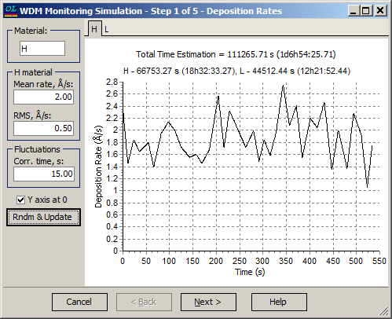

WDM Monitoring Simulation - Deposition Rates
WDM Monitoring Simulation - Deposition Rates

At the first step of the WDM Monitoring Simulation, it is necessary to specify typical values of deposition rates and fluctuations of these values for both layer materials used in the filter. Material should be selected using the material drop-down box control. Mean rate and RMS of the deposition rate are selected in the corresponding fields. The correlation time of these fluctuations is specified in the Corr. time entry field.
The Rndm & Update button allows the user to preview the simulated deposition rate dependence vs. time. The rates corresponding to H and L materials can be selected with the help of tabs at the top of the window. Each time the Rndm & Update button is pressed, a new set of simulated data is generated.
The Y-axis at 0 check box controls the scale of the Y-axis on the preview screen.
See also: